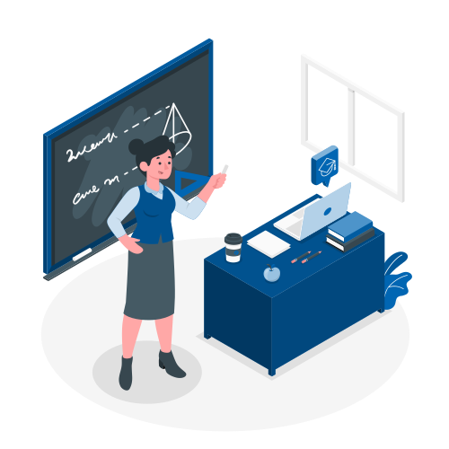

Your Classes
See your classes and create groups.

Capstone Project II
Classcode: 30945
MT 6:00pm-9:00pm
Auto-resizing sidenav
See your classes and create groups.
Capstone Project II
Classcode: 30945
MT 6:00pm-9:00pm